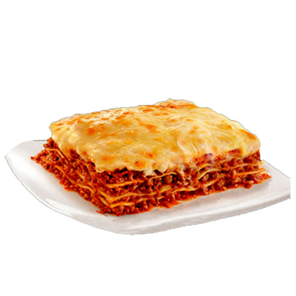

Lasanha Tradicional

HOME
Descrição
A lasanha é um prato clássico da culinária italiana, feito em camadas de massa intercaladas
com molho à bolonhesa, molho branco e bastante queijo. No Brasil, virou sinônimo de almoço
especial de domingo, cheia de sabor e aquele gratinado irresistível!
Igredientes
Para o molho à bolonhesa:
- 500g de carne moída
- 1 cebola picada
- 2 dentes de alho picados
- 2 colheres (sopa) de óleo
- 1 sachê (340g) de molho de tomate
- Sal, pimenta-do-reino e orégano a gosto
Para o molho branco:
- 2 colheres (sopa) de manteiga
- 2 colheres (sopa) de farinha de trigo
- 500ml de leite
- Sal, noz-moscada e pimenta-do-reino a gosto
Montagem:
- 1 pacote de massa para lasanha (pré-cozida ou comum)
- 300g de queijo muçarela fatiado
- 200g de presunto fatiado
- Queijo parmesão ralado para gratinar
Etapas
- Fazer o molho à bolonhesa
- Fazer o molho branco
- Montar a lasanha
- Gratinar
- Servir